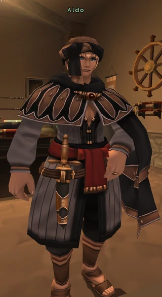

Before you begin
Be allied with Windurst, have Rank 4, and finish the preceding required story steps. Raise Rank Points if the mission is not offered.
People in this mission


Walkthrough
- Begin at your embassy in Ru’Lude Gardens, then visit the Audience Chamber (H-6). Take the letter to Aldo in Lower Jeuno’s Tenshodo headquarters; arrange Tenshodo access first.
- After meeting Aldo, trade Coeurl Meat to Baudin in Upper Jeuno for the Crest of Davoi. Speak with Muckvix, Paya-Sabya, then Muckvix again for the Yagudo Torch.
- Speak with Sattal-Mansal. Obtain a Quadav Charm from De’Vyu Headhunter and a Quadav Augury Shell from Go’Bhu Gascon in Beadeaux; exchange both for his access key items.
- Reach Davoi’s Wall of Dark Arts (G-7) and collect the Optistone beyond it.
- Traverse Castle Oztroja, use the torch-access door, and collect the Orastone in the Altar Room.
- Enter Qulun Dome through Beadeaux and collect the Aurastone.
- Visit the Audience Chamber, then your embassy in Ru’Lude Gardens for the promotion.
Important notes
- Bring Sneak and Invisible supplies. Obtain the access key items before attempting the sealed areas. The source maps show the multi-floor routes.
- An existing Airship Pass changes that part of the original reward; this is not a Khazam Airship Pass.
Completion and reward
Rank 5; 10,000 gil; Airship Pass
Area maps
Open a zone below, then select a map to enlarge it. Match the named floors and grid coordinates in the steps; these are reference area maps, not a live position tracker.
Ru'Lude Gardens


Lower Jeuno


Upper Jeuno


Davoi


Beadeaux


Castle Oztroja


Altar Room


Qulun Dome


References
HorizonXI Wiki: Windurst 4-1 · LandSandBoat mission definition
The route summary covers the original story. Other servers’ extra rewards, level-cap settings and Trust rules are not promises of Zenith behavior. Confirm battlefield entry conditions in game.